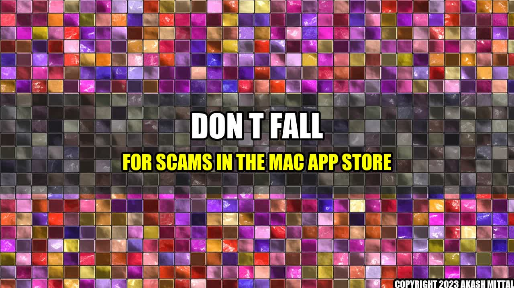

Don't Fall for Scams in the Mac App Store!

It was a beautiful day and Harry, a graphic designer, needed a new app to complete his latest project. He decided to search the Mac App Store for a reliable graphic design tool.
After scrolling through the app store, Harry found an app that caught his attention. The app was called ChatGPT, and it promised advanced graphic designing tools for a reasonable price.
Excitedly, Harry clicked the "Install" button and waited for the app to download. But what he didn't know was that the app he had just installed was a fake ChatGPT app that would harm his computer and steal his personal information.
Unfortunately, Harry's story is not unique. Many people fall for scams in the Mac App Store every day. Here are some concrete examples of scams to watch out for:
- Fake apps: These apps pretend to be legitimate, but they contain malware or ransomware that can harm your computer or steal your personal information. Look for apps that have high ratings, lots of reviews, and legitimate developer information.
- Phishing scams: These scams involve emails that look like they come from Apple or another legitimate company. They ask for your personal and financial information, such as your Apple ID or credit card number. Always verify the authenticity of the email and the sender before clicking any links.
- Subscription traps: These scams offer a free trial of a premium app or service, but once the trial ends, they charge you a hefty fee every month. Always read the terms and conditions before signing up for any free trials.
To avoid falling victim to these scams, here are three things to keep in mind:
- Do your research: Before downloading any app from the Mac App Store, make sure to read its reviews and ratings, check the developer information, and search for any news about the app.
- Be cautious of emails: If you receive an email that asks for your personal or financial information, always verify the sender and the authenticity of the email before responding or clicking any links.
- Read the fine print: Before signing up for any free trials or subscriptions, make sure to read the terms and conditions carefully to avoid getting trapped into a costly subscription.
By following these simple tips, you can protect yourself from scams in the Mac App Store and enjoy a safer and more secure online experience.
References and Further Readings:
Hashtags: #MacAppStore #ChatGPT #Scams #OnlineSecurity
Category: Technology
Akash Mittal Tech Article
Share on Twitter Share on LinkedIn